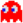

- Brush 🎨
- Chess/AI ♟️
- Pacman 🕹️
- Text File Analyzer 📁
- Sudoku Solver 🧩
- Blackjack 🃏
- Youtube-dl Wrapper 📺
- Discord Bot 👾
Brush 🎨
Node.js, HTML, CSS, Bootstrap 4, MongoDB, MongoDB Atlas, Heroku
A RESTful Web Application that allows users to register accounts and create their own artwork to publish to the community!
View Deployment GitHubHomepage and Featured Popular Artwork

Homepage contains random popular artwork that users can view and navigate to. They can even get their own artwork to this page if popular enough!
User Profiles
Users have their own profile page where they can describe themselves and information about them. They can also view their artwork, followers, following, and favorited artwork through the profile. User profiles can be commented on by any user as well.
Create and Publish Artwork

Draw your artwork and then publish it. After publishing, you are directed to the artwork profile and can edit the information about it there.
Discover

Discover the most favorited/liked artwork on the application in the discover section!
Chess/AI ♟️

C++
A console version of the board game Chess against an enemy AI that plays at Easy or Medium difficulty! Easy difficulty is just random valid moves while medium utilizes the Minimax decision rule for best move to make depending on the board.
GitHubSmarter AI and Minimax

AI uses the minimax decision rule to compute the best move to make depending on the board. AI also uses alpha-beta pruning to remove nodes that will have no effect on the final evaluation. A simplified representation of the algorithm is seen below:

By Jez9999, CC BY-SA 3.0, Link
Chess Checkmate
A classic Chess checkmate to determine a winner
Pacman 🕹️
Python, tkinter, Pillow
A Python implementation of the famous Arcade game Pacman using Python's graphical library tkinter for GUI and image processing library Pillow for image importing.
GitHubGameplay and AI
 Blinky attempts to chase Pacman from directly behind.
Pinky attempts to ambush Pacman from the front, depending on the position can lead to Pinky chasing from behind.
Clyde has completely random movement on the board.
Inky can have an equal chance of any of the previous Ghost's movement for any duration amount of time.
The AI Blinky, Pinky, and sometimes Inky use the Breadth-First-Search algorithm to find the best path to ambush Pacman. A representation of the BFS order of each location spot being checked is provided below:

Gameover
Gameover is reached when Pacman gets caught by the AI and loses all lives.
Text File Analyzer 📁
Java
Multithreaded application that analyzes text files and outputs statistics such as unique words, misspelled word count, most frequent words, etc.
GitHubProgram Execution
Interface and execution of program is shown. When a user wishes to analyzes a text file, the user is prompted a text file that has to be located in an input folder in the directory as well as how many threads to run. The threads are created and then an output log is created in /output
Output Log
An output text file is created to write the statistics of each analysis, here is an example. Checkout the README for more details on what each statistic represents.
Sudoku Solver 🧩

Python, tkinter
A Classic Sudoku Solver implemented in Python and the graphical library tkinter for the GUI. Takes input from user and also contains two example boards to be solved!
GitHubSolving

The solver utilizes the Backtracking algorithm to solve the board. The runtime is O(9 ^ m) where 9 is the number of possibilities for each square and m is the number of spaces that are blank. A representation of the algorithm can be seen below:
Board Input

Creates a GUI window in tkinter for users to input a valid Sudoku board to solve
Blackjack 🃏
Round
A representation of a single round in the application, where random cards are drawn and displayed to the console. After a user stands, the dealer will draw until they have a higher hand than the user or until bust.
Bankrupt
The game continues until the User wishes to quit or goes bankrupt. Which means going all in (displayed in console) and losing the bet.
YouTube-dl Wrapper 📺

Python, Flask, HTML, CSS, youtube-dl
Utilizes Flask to deploy a local webpage as a youtube-dl wrapper where users can input valid YouTube links and convert to mp3 files
GitHubUser Input

Each link input is sent as a get request and is processed by youtube-dl. Simple interface to wrap the youtube-dl command line
Link Validity

Links are validated on the backend and the state of the request is displayed as successful or unsuccessful in the history
Discord Bot (In Development) 👾

Node.js, Discord API
A Discord Bot that provides random features and information to a Discord server